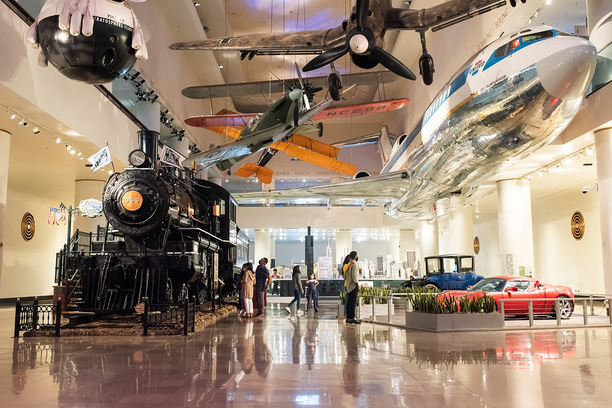
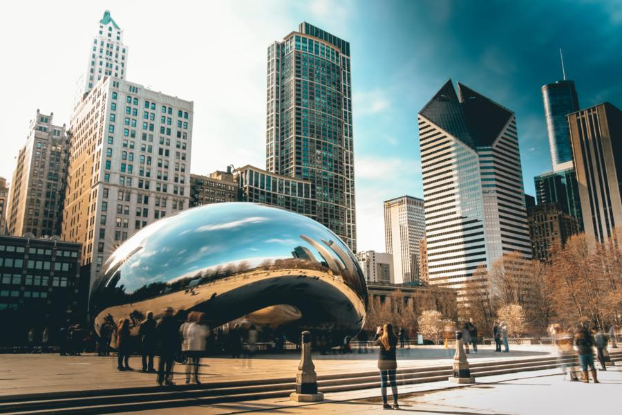
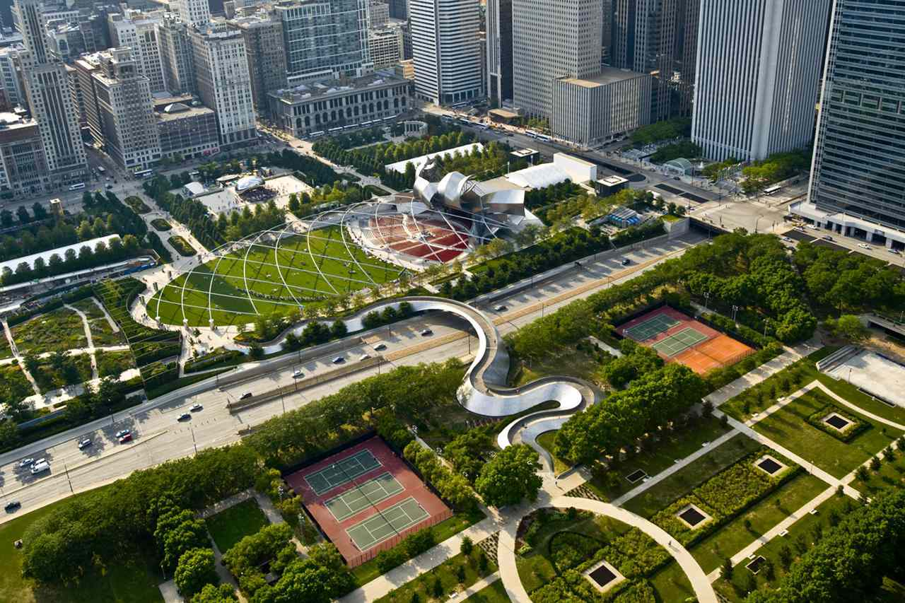
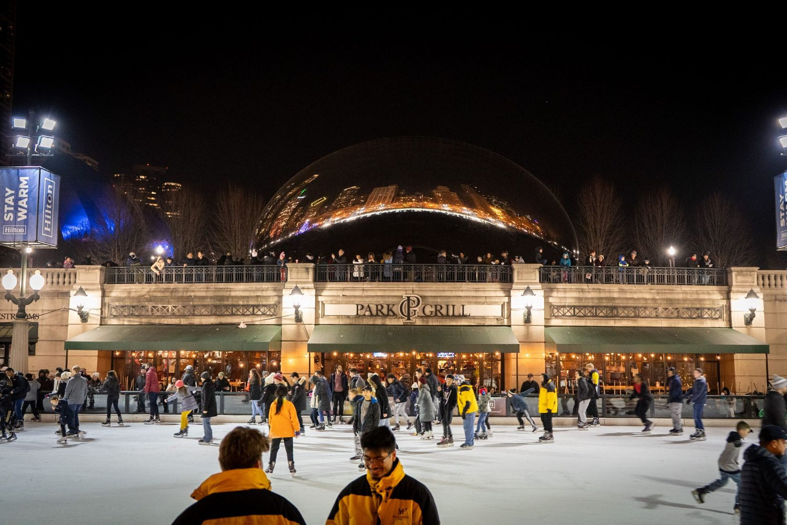
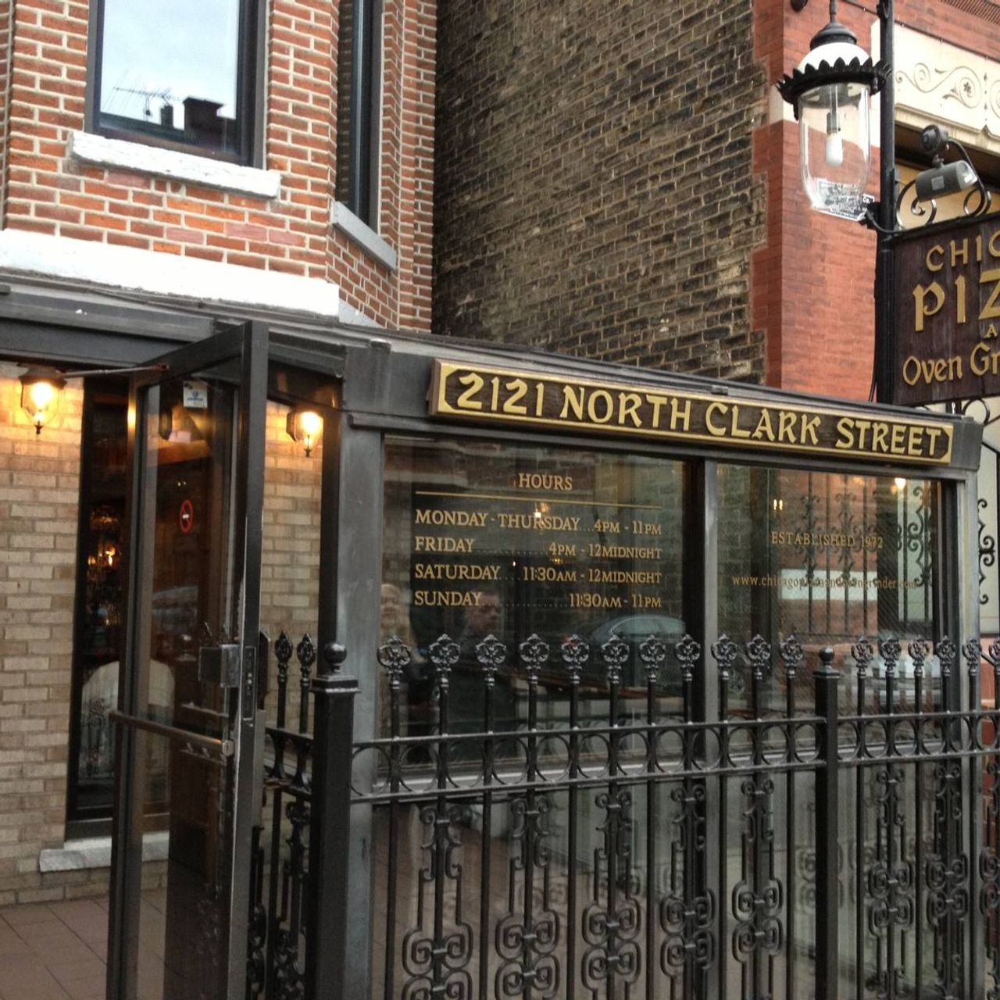
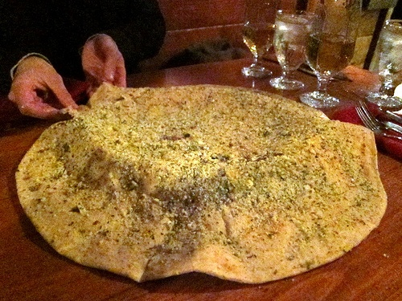
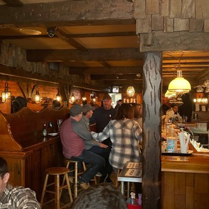
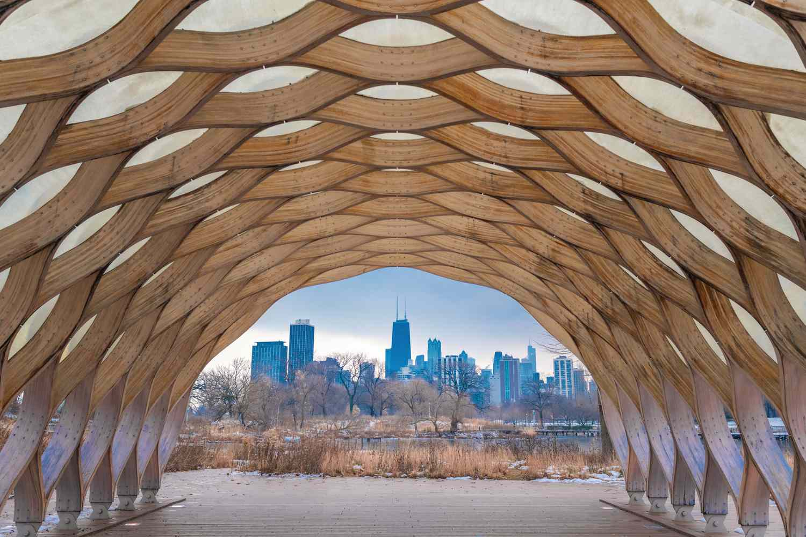
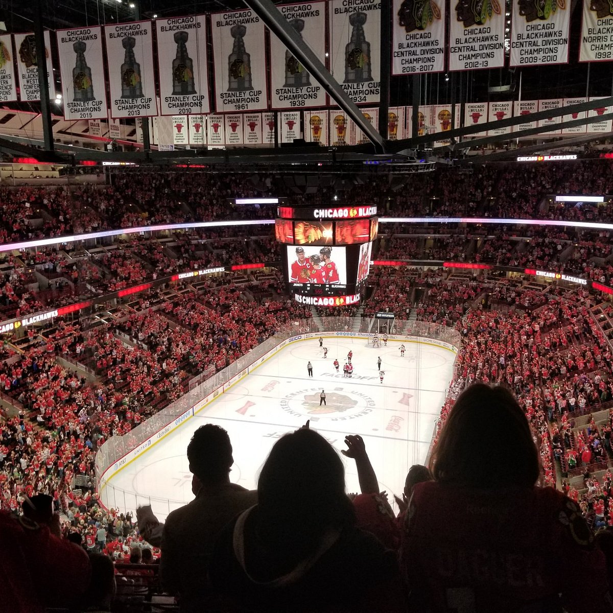
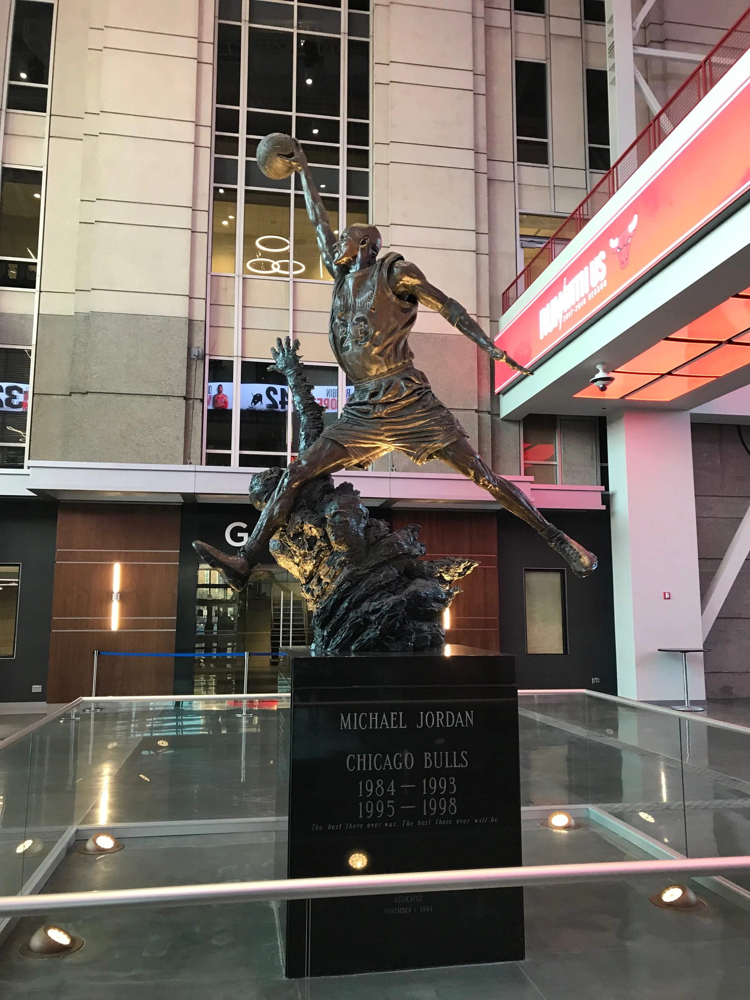

This is a guide to Chicago made by Charlotte Lucas
Chicago Guide
Museum of Science and Technology
A cutting-edge museum with a multitude of interactive attractions for children and adults, the 90-year-old Museum of
Science and Industry in Chicago inspires and entertains over one million guests each year. It holds a full-size replica
coal mine, a German submarine captured in WWII, and the command module of Apollo 8! Visitors can immerse themselves in
wonder in the Museum's Giant Dome Theater where the wrap-around screen takes them on adventures all over the world. Only
one other theater of this type exists in the world. As one of the largest science museums in the world with over 400,000
square feet of unforgettable exhibits, people of all ages can gain knowledge and unique experiences in a beautiful historic
building near the shores of Lake Michigan.
Museum of Science and Industry

Millennium Park
Located just a block from Lake Michigan in downtown Chicago, Millennium Park is a 20-acre public park that was opened to
celebrate the 3rd millennium. It has an ice rink during the winter, and the Jay Pritzker Pavilion that hosts many free events
during the summer such as the Chicago Jazz Festival, the Chicago Blues Festival, and numerous other concerts across genres. It
also contains several art features including the Crown Fountain, the Lurie Garden, and the Cloud Gate, more commonly known as
the bean, an recognizable and iconic feature of Chicago. This park is easily reached from the bus and nearby elevated train
lines and is designed to be accessible to all patrons with a variety of seating options, listening devices, and more items
available.
Millennium Park



Chicago Pizza and Oven Grinder Company
A historical restaurant tucked in an old house within walking distance of Lincoln Park Zoo, this restaurant offers food you
cannot find anywhere else in the city. It is famous for its pizza pot pies and Mediterranean bread. Although it is located across
the street from the location of the St. Valentine's Day Massacre, and legend has it that Al Capone's underlings kept watch from
the same building, today hungry folks of all ages enjoy the cozy interior. Once you visit "Oven Grinders," you will know why the
restaurant is constantly packed!
Chicago Pizza and Oven Grinder Company's Hours
| Day |
Hours |
| Monday |
4pm-10pm |
| Tuesday |
4pm-10pm |
| Wednesday |
4pm-10pm |
| Thursday |
4pm-10pm |
| Friday |
4pm-11pm |
| Saturday |
11am-11pm |
| Sunday |
11am-10pm |
Oven Grinders




Lincoln Park Zoo
Located in the heart of Chicago, right by Lake Michigan, Lincoln Park Zoo contains over 200 species and 1,100 animals! The Zoo
also contains over 850 types of plants. The Zoo is the fourth oldest zoo in North America and is completely free to attend. The Zoo
offers many outreach and wildlife support programs for the Chicago area and is an essential part of the wider community. Behind the
scenes, the Zoo staff is collaborating on research to improve the lives of animals and preserve threatened species. Whether a visitor
wants to conduct research or to simply take a walk in the beautiful environment, the Zoo is the place to be.
Here are some of the great animals you could see at the Lincoln Park Zoo:
- Polar Bear
- Rhinoceros
- Black Bear
- Red Panda
- Snow Leopard
- Red Kangaroo
- Penguin
- African Lion
- Red Wolf
- Puerto Rican Parrot
- Flamingo
- Hoffman's Two-Toed Sloth
- Bald Eagle
- Zebra
- Gorilla
- Chimpanzee
- Crowned Lemur
- Green Tree Python
Lincoln Park Zoo

United Center
Located in the near west side of the city, the United Center is home to two of Chicago's favorite sports teams: the Chicago Bulls
and the Chicago Blackhawks. It replaced the old Chicago Stadium, which was nicknamed “The Madhouse on Madison.” The sports at the
United Center are taken very seriously by Chicagoans. In fact, the roof of the United Center building was designed to amplify instead
of diminishing “the roar,” the noise made famous by Blackhawks fans at the previous arena. In addition, it took two years for the new
Allen organ to recreate the notes the previous organ produced. Accessibility and fan enjoyment are important features of the 960,000
square foot building, which also hosts concerts and other entertainment. The United Center is an important part of the culture and
history of the city.
United Center


